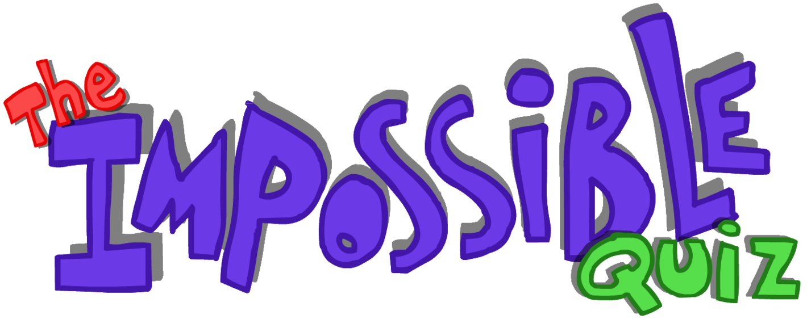
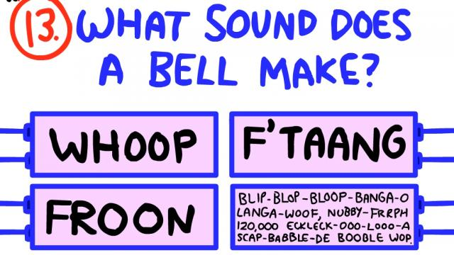
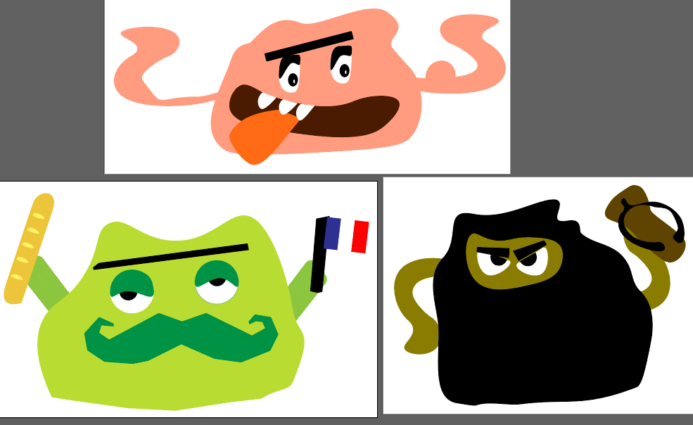
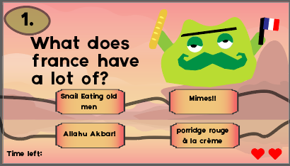
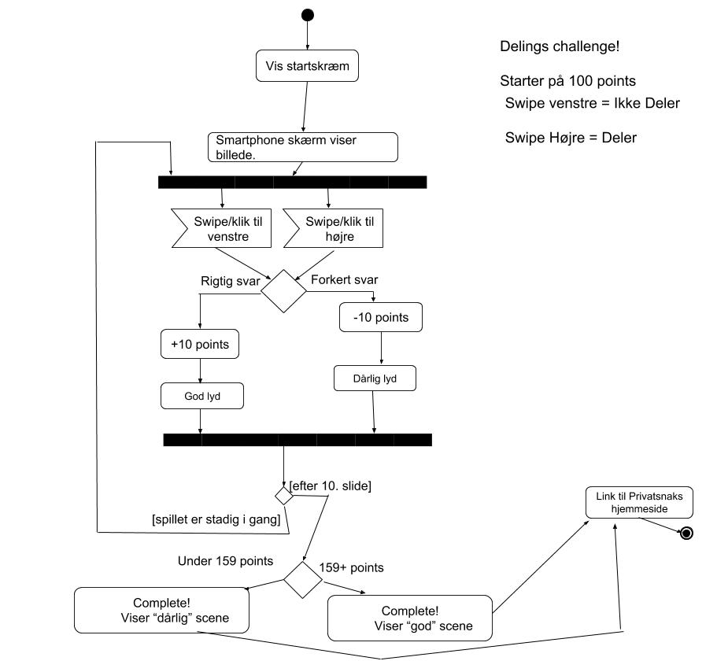
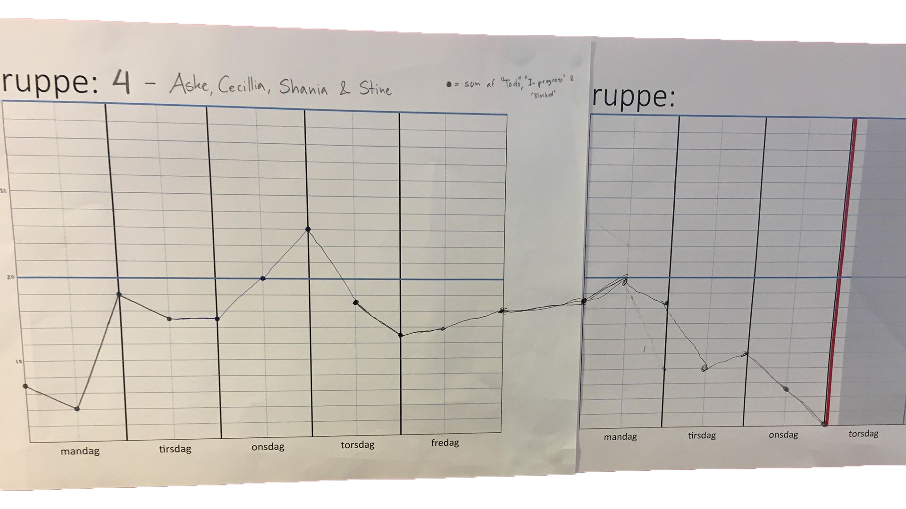

I tema 3 skulle vi lave vores eget spil. Der var meget fokus på character creation. Hvilket passede meget godt, for jeg havde i Tema 2 lavet en video om min passion for character creation.
Jeg startede med, at tegne en form for slange fordi jeg håbede på, at kunne lave et slags snake spil. Det måtte jeg droppe for, det var ikke noget vi vil kunne kode. Derfor gik jeg efter, at lave et slags quiz spil. Inspirationen kom fra the impossible quiz. Som er et sjovt og simpelt spil, hvor svarmulighederne ikke altid er de 4 svarmuligheder man ser.
 Der er dog næsten ingen karakters med i spillet, så det måtte jeg selv finde på. Jeg lavede nogle sjove slimy finguere med nogle meget konkrete karakter træk.
Det fik jeg så lavet i illutrator. Da det er et rigtig godt program til SVGer. Da man kan hive i dem, lige så tosset man vil uden de mister kvalitet.
 Da jeg ikke var super tilfreds med mit eget fulde spil, var det vigtig for mig, at gruppe projektet blev ordenlig og fornuftig stykke arbejde.
Min rolle i gruppen var blevet scrummaster. Så jeg mødte altid op, som den første og holdte styr på hvor langt vi var noget i projektet.
 Spillet blev super godt og vi fik masser af rus. Børnene synes det var, et hyggelig spil. De gav dem ihvertfald meget gode review. Kunne have noget, at gøre med alt det slik vi gav dem og det hyggelig setup vi havde. Dog vil jeg helt klart af fortrukket en mere konsistent karaktertema. Hvilket jeg fandt ud af meget svært med 5 mennesker i gruppen.